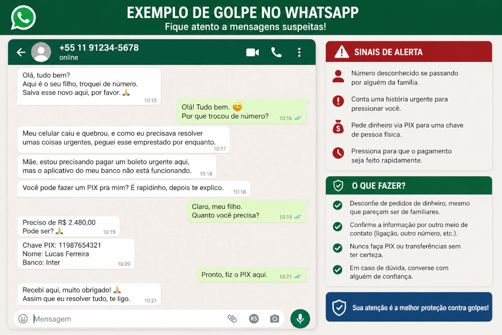

📞 Quem está ligando? (Ou mandando mensagem)
Às vezes, nosso telefone toca ou chega uma mensagem de alguém que parece ser conhecido, ou até mesmo do nosso banco. Mas no mundo digital, nem tudo é o que parece.
🎭 Como os golpistas tentam nos enganar?
Eles costumam usar três "iscas" principais:
1.A Urgência: Dizem que algo ruim vai acontecer se você não agir agora (como sua conta ser bloqueada).
2.A Emoção: Fingem ser um neto ou filho que mudou de número e precisa de dinheiro urgente para uma emergência.
3.O Prêmio: Dizem que você ganhou um sorteio ou tem um dinheiro esquecido para receber.
🛑 Medidas para não cair em golpes:
O "Pulo do Gato" no WhatsApp: Se um parente te chamar com um número novo pedindo dinheiro, não faça nada. Desligue e ligue para o número antigo dele ou para outra pessoa da família para confirmar. O carinho nos faz querer ajudar, mas a segurança vem primeiro.
Banco não pede senha por telefone: Se alguém ligar dizendo que é do banco e pedir sua senha, o número do cartão ou para você fazer uma transferência: desligue na hora. O banco nunca faz esse tipo de pedido por ligação ou mensagem.
Não clique em links de SMS: Mensagens dizendo que seu "CPF está irregular" ou que há uma "compra suspeita" geralmente trazem links falsos. Se ficar na dúvida, abra o aplicativo do banco que você já usa ou vá até a agência.
💡 O que fazer se você desconfiar?
Lembre-se: Não é falta de educação desligar o telefone na cara de quem está te pressionando. Se alguém te deixar nervoso ou apressado, esse é o maior sinal de que pode ser um golpe.